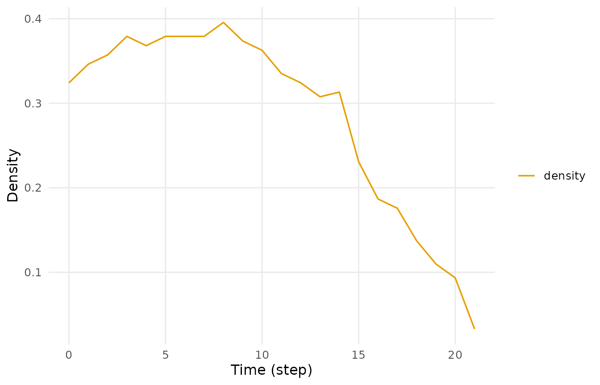
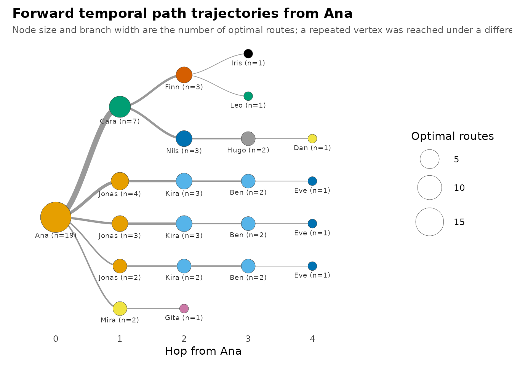

Getting started with Dynet
Temporal networks map the dynamics of relationships as they occur over time, preserving when interactions occur, their duration, and their temporal order. Two common representations are contact sequences, in which interactions are treated as instantaneous events, and interval networks, in which relationships have onset and termination times. Dynet represents these relationships as relational spells. Each spell identifies two relational endpoints and their period of connection; instantaneous contacts have equal onset and termination times.
Temporal order determines which paths are available between vertices. For example, if A shares information with B on Monday and B interacts with C on Tuesday, the information can potentially reach C through B. An interaction between B and C on Sunday could not carry information received on Monday. A sequence that follows the order and availability of interactions is called a time-respecting path.
A static network combines relationships without preserving this order. Binary aggregation also discards their duration and multiplicity, although weighted aggregation can retain summaries of these quantities. Consequently, a path in the aggregate network may not be temporally traversable. Relationships also begin and end at different times, so a network that appears densely connected in aggregate may contain periods of limited connectivity.
This vignette demonstrates these distinctions using simulated classroom contacts. The analysis covers network construction, graph-level measures over time, participants’ centrality trajectories, time-respecting paths, and the timing and duration of relational spells.
Data
school_contacts is a simulated dataset of directed
face-to-face contacts among fourteen students, supplied in tidy format.
The variables from and to identify the student
initiating a contact and the student addressed. The variables
start and end record contact onset and
termination. In this example, numeric times are interpreted as days
since the beginning of observation; decimal values allow contacts to
begin and end within a day.
head(school_contacts)
#> from to start end
#> 1 Jonas Dan 0.00 1.10
#> 2 Gita Ana 0.14 0.98
#> 3 Leo Mira 0.15 0.42
#> 4 Leo Iris 0.15 0.96
#> 5 Kira Ben 0.33 0.69
#> 6 Leo Iris 0.38 0.50Building the network
dynet() constructs a temporal network from the supplied
relational data. Because school_contacts contains
recognised endpoint and interval-boundary columns, the constructor
identifies it as interval data without requiring explicit column
arguments.
Column recognition is case-insensitive. Endpoint names such as
from/to,
sender/receiver, and
source/target are recognised, as are
start/end and
onset/terminus for interval boundaries.
Explicit column specification is needed only when names do not match
recognised aliases or their intended interpretation is ambiguous. A
duration may also be supplied in place of end, in which
case termination is calculated as start + duration.
dn <- dynet(school_contacts)
dn
#> # Temporal network (interval format, directed) | a cograph netobject
#> # 14 vertices | 240 edge spells | 110 distinct pairs
#> # observed from 0 to 21.52 step, binned every 1
#>
#> from to start end duration weight
#> Jonas Dan 0.00 1.10 1.10 1
#> Gita Ana 0.14 0.98 0.84 1
#> Leo Mira 0.15 0.42 0.27 1
#> Leo Iris 0.15 0.96 0.81 1
#> Kira Ben 0.33 0.69 0.36 1
#> Leo Iris 0.38 0.50 0.12 1
#> # 234 more spells. summary() describes the network; plot() draws it.The constructor records duration = end - start and
assigns weight = 1 when no multiplicity variable is
supplied or recognised. Positive-duration spells are active on the
half-open interval
:
onset is included, while termination is excluded. Two spells that meet
at a boundary therefore do not overlap at that instant.
The resulting network contains 14 vertices, 240 relational spells,
and 110 distinct ordered pairs, observed from time 0 to 21.52. Numeric
input retains its supplied scale and is labelled step;
here, one step represents one day. The default construction interval of
1 provides the one-day measurement intervals used below.
Because the network is directed, a relationship from Ana to Cara is distinct from a relationship from Cara to Ana. With 14 vertices and self-links excluded, there are possible ordered pairs. Of these, 110—approximately 60%—are connected at least once during the observation period.
summary() reports network properties in tabular form,
including the number of measurement bins and mean snapshot density.
summary(dn)
#> property value
#> 1 format interval
#> 2 directed yes
#> 3 vertices 14
#> 4 edge spells 240
#> 5 distinct pairs 110
#> 6 time unit step
#> 7 observed from 0
#> 8 observed to 21.52
#> 9 span 21.52
#> 10 bin width 1
#> 11 time bins 22
#> 12 mean snapshot density 0.0829
#> 13 temporal density not computed
#> 14 sessions none
#> 15 vertex attributes noneThe observation period covers 22 daily bins, with the final bin ending at time 21.52. Mean snapshot density is 0.0829: approximately 8.3% of possible directed connections are present in an average bin, compared with about 60% across the full period. This difference shows how the aggregate network combines relationships that occur at different times.
The activity plot displays spell onsets, terminations, and active-spell counts over time, providing an initial view of changes in relational activity.
plot(dn, type = "activity")
Measuring in windows
Graph-level measures describe the structure of the network as a whole. Calculating them within successive temporal windows shows how connectivity changes during the observation period. For each window, Dynet identifies the connections active during that interval and computes the requested measures on the resulting snapshot.
Four arguments control the timing of measurements. start
and end specify the first and last measurement times.
step determines the interval between measurements and
defaults to the network’s construction interval. window
specifies the duration covered by each measurement, beginning at its
reported time. By default, window equals step,
producing non-overlapping intervals. A larger window
produces overlapping measurements, while window = 0
evaluates connectivity at individual time points.
Window width determines the temporal detail of the analysis. Short windows distinguish changes over brief periods but may contain few connections. Longer windows combine more relationships and provide a broader summary, while obscuring changes within each interval. Connections included in the same window need not all be active simultaneously.
Daily density
Density is the proportion of possible connections present in the network. For a directed network with vertices and no self-links, density within window is
where is the number of ordered vertex pairs with at least one active spell during the window. Repeated or overlapping spells between the same endpoints contribute one connection, so density ranges from 0 to 1.
The following call calculates density using the default one-day intervals:
density <- metrics(dn, measure = "density")
density
#> # Density (graph-level)
#> # 22 time points, 1 per bin | time in step
#> time measure value
#> 0 density 0.05494505
#> 1 density 0.04395604
#> 2 density 0.05494505
#> 3 density 0.06593407
#> 4 density 0.07142857
#> 5 density 0.08791209
#> 6 density 0.15934066
#> 7 density 0.10439560
#> 8 density 0.09890110
#> 9 density 0.08791209
#> 10 density 0.10439560
#> 11 density 0.09890110
#> # 10 more rows. summary() aggregates them; plot() draws them.The result is a tidy data frame containing time, the
beginning of the measurement window; measure, the requested
statistic; and value, its calculated value.
On day 0, density is 0.055, corresponding to 10 of the 182 possible ordered pairs. On day 6, it increases to 0.159, corresponding to 29 pairs. These counts include every pair connected at some point during the respective day.
summary() describes the resulting time series. It
reports the number of measurements (n), mean, standard
deviation (sd), minimum, maximum, and
peak_time, which identifies the beginning of the window
with the highest value.
summary(density)
#> measure n mean sd min max peak_time
#> 1 density 22 0.08291708 0.03929021 0.03296703 0.1648352 14Across the 22 bins, mean density is 0.083 (SD 0.039). Density peaks at 0.165 on day 14, when 30 ordered pairs are connected. The minimum, 0.033, occurs in the final bin, which covers only the period from day 21 to day 21.52. Because this interval is shorter than a full day, it provides less time for contacts to occur. Among complete daily intervals, the minimum density is 0.038 on day 18.
Rolling weekly density
A rolling window describes connectivity over a longer period while
retaining frequent measurements. Setting step = 1 and
window = 7 calculates density daily using the seven-day
interval beginning at each measurement time. Successive windows overlap,
so adjacent values share much of their underlying data.

A pair contributes to weekly density if it is connected at any time during that seven-day interval. With the same vertex population, weekly density cannot be lower than daily density measured from the same starting time, because the weekly window includes the daily window.
Windows beginning after day 14.52 extend beyond the observation period and therefore contain fewer than seven observed days. The final values should be interpreted with this decreasing observation duration in mind.
Vertex trajectories
Graph-level measures describe the network as a whole, whereas
vertex-level centrality measures describe individual positions within
it. centrality_series() computes the selected measures for
each vertex within successive temporal windows. The resulting
trajectories show when participants become more or less connected. The
arguments start, end, step, and
window specify the measurement intervals in the same way as
for metrics().
Daily degree
Degree counts direct connections within a
measurement window. In a directed network, indegree counts distinct
vertices with incoming ties to the focal vertex, while outdegree counts
distinct vertices reached by its outgoing ties. The default
mode = "all" adds these two quantities. A reciprocated
relationship therefore contributes twice to total degree, even though it
involves a single partner. Repeated spells in the same direction between
two vertices count once within a window.
degree <- centrality_series(dn, measure = "degree")
degree
#> # Degree (node-level)
#> # 14 vertices | 22 time points, 1 per bin | time in step
#> time node measure value
#> 0 Ana degree 1
#> 0 Ben degree 1
#> 0 Cara degree 1
#> 0 Dan degree 1
#> 0 Eve degree 2
#> 0 Finn degree 1
#> 0 Gita degree 1
#> 0 Hugo degree 1
#> 0 Iris degree 2
#> 0 Jonas degree 2
#> 0 Kira degree 2
#> 0 Leo degree 2
#> # 296 more rows. summary() aggregates them; plot() draws them.The result is a tidy data frame containing time,
node, measure, and value. With
fourteen students and 22 measurement intervals, the degree series
contains 308 observations. Each value describes the connections active
within the corresponding daily interval, rather than the number of
individual contact events.
summary() summarises each participant’s trajectory,
reporting the number of measurements, mean, standard deviation, minimum,
maximum, and the time at which degree reaches its maximum.
summary(degree)
#> node measure n mean sd min max peak_time
#> 1 Ana degree 22 2.181818 2.015095 0 7 6
#> 2 Ben degree 22 2.000000 1.234427 0 4 4
#> 3 Cara degree 22 2.227273 1.342770 0 5 4
#> 4 Dan degree 22 2.090909 1.444500 1 5 13
#> 5 Eve degree 22 2.272727 2.051290 0 8 14
#> 6 Finn degree 22 2.000000 1.661898 0 6 12
#> 7 Gita degree 22 1.727273 1.777688 0 7 6
#> 8 Hugo degree 22 2.318182 1.861550 0 6 6
#> 9 Iris degree 22 1.772727 1.066004 0 4 11
#> 10 Jonas degree 22 2.863636 2.076982 0 7 13
#> 11 Kira degree 22 2.636364 1.255292 1 6 6
#> 12 Leo degree 22 1.636364 1.432462 0 5 6
#> 13 Mira degree 22 2.272727 1.695423 0 6 13
#> 14 Nils degree 22 2.181818 2.174229 0 7 14Mean daily total degree ranges from 1.64 to 2.86. The trajectories nevertheless differ in their variability and timing:
- Relatively consistent connectivity. Two students have at least one connection in every daily interval. The three smallest standard deviations range from 1.07 to 1.26, with maximum degrees between 4 and 6.
- Episodic connectivity. Other students alternate between intervals without connections and intervals with substantially higher degree. Five students reach maxima of 7 or 8, with standard deviations between 1.78 and 2.17. Their peaks occur on days 6, 13, and 14.
These descriptions represent variation along a continuum, rather than formally identified groups. Similar mean degrees can arise from different temporal patterns, so the mean alone does not describe when opportunities for interaction occur.
The heatmap displays all fourteen trajectories, with colour indicating degree for each participant and measurement interval.
plot(degree, type = "heatmap")
Temporal centrality
Temporal centrality accounts for the timing and order of interactions
when measuring a vertex’s position in the network. Temporal closeness
measures how quickly a participant can reach others through
time-respecting paths. Temporal betweenness measures the extent to which
a participant acts as an intermediary on those paths. In Dynet, these
measures are calculated with path_centrality().
Temporal closeness measures how quickly a participant can reach others through time-respecting paths. Starting at the beginning of the observation period, Dynet determines the earliest time each reachable participant can be reached. The elapsed time includes waiting for subsequent interactions along the path. Temporal closeness is the inverse of the mean elapsed time across reachable participants; higher values indicate earlier reachability.
closeness <- path_centrality(dn, measure = "closeness")
closeness
#> # Closeness (node-level)
#> # 14 vertices | time in step
#> # computed on time-respecting paths across the whole window
#> node measure value
#> Ana closeness 0.1313662
#> Ben closeness 0.1815896
#> Cara closeness 0.1931075
#> Dan closeness 0.2230994
#> Eve closeness 0.2616221
#> Finn closeness 0.1644945
#> Gita closeness 0.1404950
#> Hugo closeness 0.1878341
#> Iris closeness 0.2398082
#> Jonas closeness 0.3674392
#> Kira closeness 0.2107994
#> Leo closeness 0.3747478
#> # 2 more rows. summary() aggregates them; plot() draws them.In this example, temporal closeness ranges from 0.131 to 0.375, corresponding to mean elapsed times of approximately 7.6 and 2.7 days, respectively. Unreachable participants are excluded from the mean, so the measure describes the speed of reaching those who are reachable.
Temporal betweenness measures how often a participant acts as an intermediary on time-respecting paths between other participants. Dynet considers paths that arrive earliest and, among those arriving at the same time, use the fewest interactions. For each reachable ordered pair, a participant receives a contribution equal to the proportion of these paths that pass through them. Temporal betweenness sums these contributions across pairs.
betweenness <- path_centrality(dn, measure = "betweenness")
betweenness
#> # Betweenness (node-level)
#> # 14 vertices | time in step
#> # computed on time-respecting paths across the whole window
#> node measure value
#> Ana betweenness 11.000000
#> Ben betweenness 15.416667
#> Cara betweenness 41.916667
#> Dan betweenness 4.333333
#> Eve betweenness 16.416667
#> Finn betweenness 25.583333
#> Gita betweenness 22.000000
#> Hugo betweenness 12.333333
#> Iris betweenness 16.833333
#> Jonas betweenness 7.000000
#> Kira betweenness 41.750000
#> Leo betweenness 32.583333
#> # 2 more rows. summary() aggregates them; plot() draws them.Here, temporal betweenness ranges from approximately 4.3 to 41.9. Higher values indicate a greater role in connecting others through these paths. The values are unnormalised sums, rather than percentages or counts of interactions. They describe potential routes through the observed network; they do not establish that information actually travelled along those routes.
Time-respecting paths
paths() identifies which vertices can be reached from a
specified source through time-respecting paths. The search begins at the
start of the observation period unless start is specified.
For each reachable destination, it identifies the earliest arrival time
and then the fewest interactions needed to arrive at that time. These
are called shortest foremost paths.
The following call searches for paths from Ana:
from_ana <- paths(dn, from = "Ana")
from_ana
#> # Time-respecting paths from 'Ana', from t = 0
#> # reaches 13 of 13 other vertices | time in step
#> node reachable arrival_time attained latency n_hops n_paths
#> Ana TRUE 0.00 TRUE 0.00 0 1
#> Ben TRUE 9.59 TRUE 9.59 3 3
#> Cara TRUE 6.67 TRUE 6.67 1 1
#> Dan TRUE 7.98 TRUE 7.98 4 1
#> Eve TRUE 11.66 TRUE 11.66 4 3
#> Finn TRUE 6.96 TRUE 6.96 2 1
#> Gita TRUE 6.36 TRUE 6.36 2 1
#> Hugo TRUE 7.98 TRUE 7.98 3 1
#> Iris TRUE 10.00 TRUE 10.00 3 1
#> Jonas TRUE 2.12 TRUE 2.12 1 1
#> Kira TRUE 6.12 TRUE 6.12 2 2
#> Leo TRUE 9.65 TRUE 9.65 3 1
#> # 2 more rows. summary() aggregates them; plot() draws the tree.The result is a tidy data frame describing reachability from Ana to
each vertex. reachable indicates whether a time-respecting
path exists, and arrival_time records the earliest arrival.
latency measures the elapsed time from the search start to
arrival, including waiting between interactions. n_hops
gives the number of interactions along a shortest foremost path, and
n_paths counts the distinct paths satisfying these
criteria.
Starting on day 0, Ana can reach all thirteen other students: three through one interaction, four through two, four through three, and two through four. Fewer interactions do not necessarily imply earlier arrival. For example, a two-hop path arrives on day 6.12, before two direct contacts become available on days 6.36 and 6.67. Arrival therefore depends on when the interactions occur as well as how they connect participants.
summary() reports the number and proportion of other
vertices reached, together with the median and maximum latency and hop
count.
summary(from_ana)
#> property value
#> 1 source Ana
#> 2 direction forward
#> 3 reachable 13
#> 4 reachable share 1
#> 5 median latency 7.51
#> 6 max latency 11.66
#> 7 median hops 2
#> 8 max hops 4Ana can reach all thirteen other students, giving a reachable proportion of 1. The median arrival latency is 7.51 days and the maximum is 11.66 days. The median hop count is 2, and the maximum is 4. Although daily density never exceeds 0.165, interactions occurring in sequence across days allow Ana to reach every other student within twelve days.
Reachability also depends on when the search begins. Setting
start = 18 restricts the search to paths available from day
18 onward. Spells that ended before this time cannot contribute, while
spells still active at the search start remain available.
from_ana_late <- paths(dn, from = "Ana", start = 18)
summary(from_ana_late)
#> property value
#> 1 source Ana
#> 2 direction forward
#> 3 reachable 5
#> 4 reachable share 0.385
#> 5 median latency 2.43
#> 6 max latency 2.68
#> 7 median hops 2
#> 8 max hops 3From day 18, Ana can reach five of the thirteen other students, giving a reachable proportion of 0.385. Among these students, the maximum arrival latency is 2.68 days and the maximum hop count is 3. Thus, the same participant can reach different sets of people depending on the search start and the interactions available during the remaining observation period.
A backward search identifies which participants could reach a
specified vertex by a given deadline. With
direction = "backward", the default deadline is the end of
the observation period. For each participant, paths()
determines the latest departure time that would allow a time-respecting
path to reach Ana by that deadline.
into_ana <- paths(dn, from = "Ana", direction = "backward")
summary(into_ana)
#> property value
#> 1 source Ana
#> 2 direction backward
#> 3 reachable 13
#> 4 reachable share 1
#> 5 median latency 4.27
#> 6 max latency 8.9
#> 7 median hops 2
#> 8 max hops 3In backward searches, arrival_time records the latest
departure boundary, and latency is the elapsed time from
that boundary to the deadline. Because relational spells exclude their
termination time, departure may be possible arbitrarily close to this
boundary but not exactly at it. In such cases,
attained = FALSE; the participant is nevertheless reachable
in the backward search.
All thirteen other students could reach Ana by day 21.52, the end of observation. The median backward latency is 4.27 days and the maximum is 8.9 days. These values describe how far before the deadline participants would need to depart along the available paths.
Routes
Several shortest foremost paths can follow the same sequence of
vertices while using different relational spells.
pathways() groups these paths by their vertex sequence,
called a route, and counts the paths following each
route.
pathways(dn, from = "Ana")
#> # Time-respecting pathways (5 distinct routes)
#> # 7 optimal routes counted
#> route endpoint count share n_hops
#> Ana -> Jonas -> Kira -> Ben -> Eve Eve 3 0.4285714 4
#> Ana -> Mira -> Gita Gita 1 0.1428571 2
#> Ana -> Cara -> Finn -> Iris Iris 1 0.1428571 3
#> Ana -> Cara -> Finn -> Leo Leo 1 0.1428571 3
#> Ana -> Cara -> Nils -> Hugo -> Dan Dan 1 0.1428571 4
#> arrival_time
#> 11.66
#> 6.36
#> 10.00
#> 9.65
#> 7.98The result is a tidy data frame. route gives the
sequence of vertices, endpoint identifies the destination,
and count records the number of shortest foremost paths
following that route. share gives the route’s proportion of
all counted paths in the result. n_hops records the number
of interactions along the route, and arrival_time gives the
earliest arrival at its destination. Routes are ordered by decreasing
count.
These counts describe the available paths through the observed interactions. They do not measure how often participants actually transmitted information along a route.
In this example, pathways() reports five routes
containing seven shortest foremost paths. One route accounts for three
paths (share 0.429) and ends at the last student reached, on day 11.66.
These paths follow the same sequence of students through different
relational spells. Each of the other four routes accounts for one
path.
The reported routes end at leaves of the path tree. Paths that terminate at intermediate vertices are represented within longer routes rather than listed separately.
Calling plot() on the paths() result
displays the paths as a tree:
plot(from_ana)
Ana is the root, and each successive level adds one interaction. Node size and branch width indicate the number of shortest foremost paths using that part of the tree. Labels identify the participant and path count.
Each tree node represents a participant reached at a particular time. The same participant can therefore appear more than once when paths reach them at different times. These arrival times determine which subsequent interactions remain available to extend each path.
path_trajectories() returns the path tree in tidy
format, allowing its branches and counts to be examined directly.
tree <- path_trajectories(from_ana)
tree
#> # Forward temporal trajectory tree from Ana
#> # 22 nodes, 4 hops deep, 19 routes
#> node
#> 1 Ana@0
#> 2 Ana@0 -> Cara@6.67
#> 3 Ana@0 -> Cara@6.67 -> Finn@6.96
#> 4 Ana@0 -> Cara@6.67 -> Finn@6.96 -> Iris@10
#> 5 Ana@0 -> Cara@6.67 -> Finn@6.96 -> Leo@9.65
#> 6 Ana@0 -> Cara@6.67 -> Nils@7.51
#> 7 Ana@0 -> Cara@6.67 -> Nils@7.51 -> Hugo@7.98
#> 8 Ana@0 -> Cara@6.67 -> Nils@7.51 -> Hugo@7.98 -> Dan@7.98
#> 9 Ana@0 -> Jonas@2.12
#> 10 Ana@0 -> Jonas@2.12 -> Kira@6.12
#> 11 Ana@0 -> Jonas@2.12 -> Kira@6.12 -> Ben@9.59
#> 12 Ana@0 -> Jonas@2.12 -> Kira@6.12 -> Ben@9.59 -> Eve@11.66
#> 13 Ana@0 -> Jonas@3.43
#> 14 Ana@0 -> Jonas@3.43 -> Kira@6.12
#> 15 Ana@0 -> Jonas@3.43 -> Kira@6.12 -> Ben@9.59
#> 16 Ana@0 -> Jonas@3.43 -> Kira@6.12 -> Ben@9.59 -> Eve@11.66
#> 17 Ana@0 -> Jonas@6.68
#> 18 Ana@0 -> Jonas@6.68 -> Kira@6.68
#> 19 Ana@0 -> Jonas@6.68 -> Kira@6.68 -> Ben@9.59
#> 20 Ana@0 -> Jonas@6.68 -> Kira@6.68 -> Ben@9.59 -> Eve@11.66
#> 21 Ana@0 -> Mira@6.36
#> 22 Ana@0 -> Mira@6.36 -> Gita@6.36
#> parent depth count probability vertex
#> 1 <NA> 0 19 NA Ana
#> 2 Ana@0 1 7 0.3684211 Cara
#> 3 Ana@0 -> Cara@6.67 2 3 0.4285714 Finn
#> 4 Ana@0 -> Cara@6.67 -> Finn@6.96 3 1 0.3333333 Iris
#> 5 Ana@0 -> Cara@6.67 -> Finn@6.96 3 1 0.3333333 Leo
#> 6 Ana@0 -> Cara@6.67 2 3 0.4285714 Nils
#> 7 Ana@0 -> Cara@6.67 -> Nils@7.51 3 2 0.6666667 Hugo
#> 8 Ana@0 -> Cara@6.67 -> Nils@7.51 -> Hugo@7.98 4 1 0.5000000 Dan
#> 9 Ana@0 1 4 0.2105263 Jonas
#> 10 Ana@0 -> Jonas@2.12 2 3 0.7500000 Kira
#> 11 Ana@0 -> Jonas@2.12 -> Kira@6.12 3 2 0.6666667 Ben
#> 12 Ana@0 -> Jonas@2.12 -> Kira@6.12 -> Ben@9.59 4 1 0.5000000 Eve
#> 13 Ana@0 1 3 0.1578947 Jonas
#> 14 Ana@0 -> Jonas@3.43 2 3 1.0000000 Kira
#> 15 Ana@0 -> Jonas@3.43 -> Kira@6.12 3 2 0.6666667 Ben
#> 16 Ana@0 -> Jonas@3.43 -> Kira@6.12 -> Ben@9.59 4 1 0.5000000 Eve
#> 17 Ana@0 1 2 0.1052632 Jonas
#> 18 Ana@0 -> Jonas@6.68 2 2 1.0000000 Kira
#> 19 Ana@0 -> Jonas@6.68 -> Kira@6.68 3 2 1.0000000 Ben
#> 20 Ana@0 -> Jonas@6.68 -> Kira@6.68 -> Ben@9.59 4 1 0.5000000 Eve
#> 21 Ana@0 1 2 0.1052632 Mira
#> 22 Ana@0 -> Mira@6.36 2 1 0.5000000 Gita
#> time session branch
#> 1 0.00 <NA> 3.15
#> 2 6.67 <NA> 5.75
#> 3 6.96 <NA> 6.50
#> 4 10.00 <NA> 7.00
#> 5 9.65 <NA> 6.00
#> 6 7.51 <NA> 5.00
#> 7 7.98 <NA> 5.00
#> 8 7.98 <NA> 5.00
#> 9 2.12 <NA> 4.00
#> 10 6.12 <NA> 4.00
#> 11 9.59 <NA> 4.00
#> 12 11.66 <NA> 4.00
#> 13 3.43 <NA> 3.00
#> 14 6.12 <NA> 3.00
#> 15 9.59 <NA> 3.00
#> 16 11.66 <NA> 3.00
#> 17 6.68 <NA> 2.00
#> 18 6.68 <NA> 2.00
#> 19 9.59 <NA> 2.00
#> 20 11.66 <NA> 2.00
#> 21 6.36 <NA> 1.00
#> 22 6.36 <NA> 1.00node identifies a tree node by the sequence of
vertex@time steps leading to it, and parent
identifies the preceding node. depth gives the number of
interactions from the source. vertex and time
record the participant and arrival time separately.
count gives the number of shortest foremost paths
passing through or ending at a tree node. probability
divides this count by the parent’s count, describing the proportion of
the parent’s paths that continue along that branch. It is a proportion
of counted paths, rather than an estimated probability of information
transmission.
The tree contains 22 nodes. Its root, Ana@0, has a count
of 19, representing all shortest foremost paths reported by
paths(), including the zero-hop path at Ana. One first-hop
branch accounts for seven paths and subsequently reaches six additional
students. Another student appears on three first-hop branches, with
arrival times of 2.12, 3.43, and 6.68 days. These branches show how
different contact times can support paths through the same
participants.
A shortest foremost path need not reach every intermediate participant at their earliest possible time. In this example, one path reaches its second participant on day 6.68, although that participant is reachable by day 6.12 through another path. Both arrivals nevertheless allow the next participant to be reached at their earliest arrival time, day 9.59. Arriving earlier at an intermediate participant therefore does not necessarily produce an earlier arrival at the destination.
Tie dynamics
Tie dynamics describe when relational spells begin and end, how long
they last, and how they recur over time. events() counts
spell onsets (formation) and terminations
(dissolution) within each measurement window. With the
default window = step, windows do not overlap, so each
onset and termination within the measurement period is counted once.
turnover <- events(dn)
summary(turnover)
#> measure n mean sd min max peak_time
#> 1 dissolution 22 10.90909 6.132731 3 27 14
#> 2 formation 22 10.90909 6.689787 0 29 13Both series average 10.91 events per measurement bin: all 240 spells begin and end within the observation period, which spans 22 bins. Formation peaks at 29 spells on day 13, while dissolution peaks at 27 on day 14, the day with the highest density. At least one bin contains no onsets, whereas every bin contains at least three terminations.
durations() summarises the duration of relational spells
for each ordered pair of vertices, with spell duration calculated as
end - start. Two pairs may have the same number of spells
but differ substantially in how long their connections last.
Setting measure = "mean" returns the mean spell duration
for each pair. Other options include "events" for the
number of spells, "total" for their summed duration, and
"median" for their median duration.
lengths <- durations(dn, measure = "mean")
lengths
#> # Relationship duration (edge-level)
#> # time in step
#> # durations in step
#> from to measure value
#> Ana Cara mean 0.1000000
#> Ana Dan mean 0.3400000
#> Ana Gita mean 0.4220000
#> Ana Iris mean 0.5000000
#> Ana Jonas mean 0.5850000
#> Ana Kira mean 0.1100000
#> Ana Leo mean 1.1900000
#> Ana Mira mean 0.3466667
#> Ben Eve mean 0.6100000
#> Ben Finn mean 0.2300000
#> Ben Gita mean 0.3400000
#> Ben Hugo mean 0.1475000
#> # 98 more rows. summary() aggregates them; plot() draws them.The result is a tidy data frame containing from,
to, measure, and value. Among
pairs with Ana as the initiating student, mean spell duration ranges
from 0.10 to 1.19 days. Weighting an aggregate network by spell counts
alone would omit this variation.
Ana has direct contacts with eight students during the observation period, but shortest foremost paths reach only three of them directly. The other five are reached earlier through paths involving two to four interactions, before their direct contacts with Ana begin. A direct connection in the aggregate network therefore need not provide the earliest route to its destination.
Burstiness describes variation in the intervals
between successive events. Here, an event is the onset of a spell
involving a participant as either from or to.
Let
be the mean interval between consecutive events and
its population standard deviation. Burstiness is calculated as
For equal, positive intervals, . Positive values indicate greater variation in spacing, consistent with closely spaced events separated by longer gaps. A value of 0 indicates that the standard deviation equals the mean, as in the theoretical exponential waiting-time distribution of a Poisson process. A value near 0 alone does not establish that events follow a Poisson process.
The memory coefficient, , is the Pearson correlation between consecutive intervals. Positive values indicate that short intervals tend to follow short intervals and long intervals tend to follow long intervals. Negative values indicate a tendency for short and long intervals to alternate.
rhythm <- burstiness(dn)
summary(rhythm)
#> node measure n mean sd min max
#> 1 Ana burstiness 1 0.24575324 NA 0.24575324 0.24575324
#> 2 Ana events 1 36.00000000 NA 36.00000000 36.00000000
#> 3 Ana memory 1 -0.03128243 NA -0.03128243 -0.03128243
#> 4 Ben burstiness 1 0.03288611 NA 0.03288611 0.03288611
#> 5 Ben events 1 34.00000000 NA 34.00000000 34.00000000
#> 6 Ben memory 1 -0.19926343 NA -0.19926343 -0.19926343
#> 7 Cara burstiness 1 -0.05610924 NA -0.05610924 -0.05610924
#> 8 Cara events 1 35.00000000 NA 35.00000000 35.00000000
#> 9 Cara memory 1 0.07458054 NA 0.07458054 0.07458054
#> 10 Dan burstiness 1 -0.05061772 NA -0.05061772 -0.05061772
#> 11 Dan events 1 35.00000000 NA 35.00000000 35.00000000
#> 12 Dan memory 1 0.21654310 NA 0.21654310 0.21654310
#> 13 Eve burstiness 1 0.09217906 NA 0.09217906 0.09217906
#> 14 Eve events 1 34.00000000 NA 34.00000000 34.00000000
#> 15 Eve memory 1 0.25882509 NA 0.25882509 0.25882509
#> 16 Finn burstiness 1 0.02938507 NA 0.02938507 0.02938507
#> 17 Finn events 1 29.00000000 NA 29.00000000 29.00000000
#> 18 Finn memory 1 -0.22653754 NA -0.22653754 -0.22653754
#> 19 Gita burstiness 1 0.06104200 NA 0.06104200 0.06104200
#> 20 Gita events 1 31.00000000 NA 31.00000000 31.00000000
#> 21 Gita memory 1 0.21165690 NA 0.21165690 0.21165690
#> 22 Hugo burstiness 1 0.09885443 NA 0.09885443 0.09885443
#> 23 Hugo events 1 34.00000000 NA 34.00000000 34.00000000
#> 24 Hugo memory 1 0.11283700 NA 0.11283700 0.11283700
#> 25 Iris burstiness 1 -0.05968068 NA -0.05968068 -0.05968068
#> 26 Iris events 1 30.00000000 NA 30.00000000 30.00000000
#> 27 Iris memory 1 -0.09356972 NA -0.09356972 -0.09356972
#> 28 Jonas burstiness 1 -0.02750549 NA -0.02750549 -0.02750549
#> 29 Jonas events 1 46.00000000 NA 46.00000000 46.00000000
#> 30 Jonas memory 1 0.23391957 NA 0.23391957 0.23391957
#> 31 Kira burstiness 1 -0.07048265 NA -0.07048265 -0.07048265
#> 32 Kira events 1 38.00000000 NA 38.00000000 38.00000000
#> 33 Kira memory 1 -0.14972726 NA -0.14972726 -0.14972726
#> 34 Leo burstiness 1 -0.01020265 NA -0.01020265 -0.01020265
#> 35 Leo events 1 28.00000000 NA 28.00000000 28.00000000
#> 36 Leo memory 1 0.48001912 NA 0.48001912 0.48001912
#> 37 Mira burstiness 1 0.09968547 NA 0.09968547 0.09968547
#> 38 Mira events 1 36.00000000 NA 36.00000000 36.00000000
#> 39 Mira memory 1 0.18691159 NA 0.18691159 0.18691159
#> 40 Nils burstiness 1 0.08408761 NA 0.08408761 0.08408761
#> 41 Nils events 1 34.00000000 NA 34.00000000 34.00000000
#> 42 Nils memory 1 0.22784733 NA 0.22784733 0.22784733Burstiness ranges from −0.070 to 0.246, with eight students having positive values and six having negative values. Memory ranges from −0.227 to 0.480 and is positive for nine of the fourteen students. Participants have between 28 and 46 recorded spell onsets. These measures describe different aspects of interaction timing: burstiness captures variation in event spacing, while memory captures the association between successive intervals.
The results illustrate how interaction frequency, direct connectivity, and temporal position can differ. The student with the fewest events (28) and the lowest mean daily degree has the highest temporal closeness and the third-highest temporal betweenness. Conversely, the student with the most events (46) and the highest mean daily degree has the second-lowest temporal betweenness.
Frequent interaction therefore does not necessarily imply earlier reachability or a greater intermediary role. These temporal properties depend on how a participant’s interactions connect with those of others in time. Examining event counts, degree trajectories, and temporal centrality together provides a fuller description of participation than any single measure.
Next steps
vignette("building-networks") explains how to construct
temporal networks from contact, threaded, and co-presence data. It also
covers direction, self-links, weights, vertex attributes, sessions,
observation periods, and vertex activity spells.
vignette("ch17-temporal-networks") demonstrates an analysis
of a MOOC discussion forum using Dynet.
?metrics and ?centrality_series document
the available graph-level and vertex-level measures. ?paths
describes the traversal rules, including traversal_time for
specifying a fixed duration per interaction and
as.data.frame(x, what = "steps") for inspecting the
individual steps of each path.